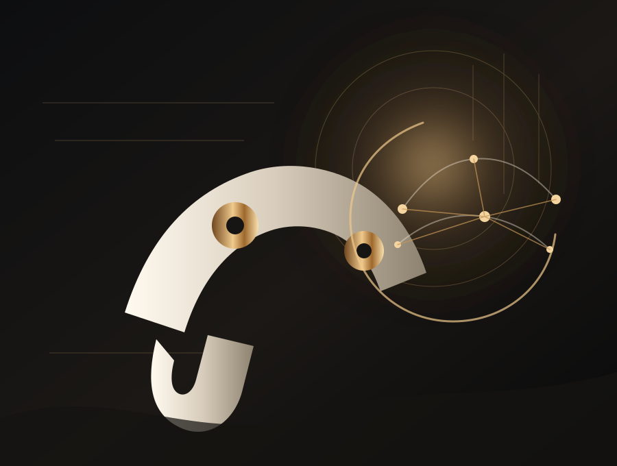
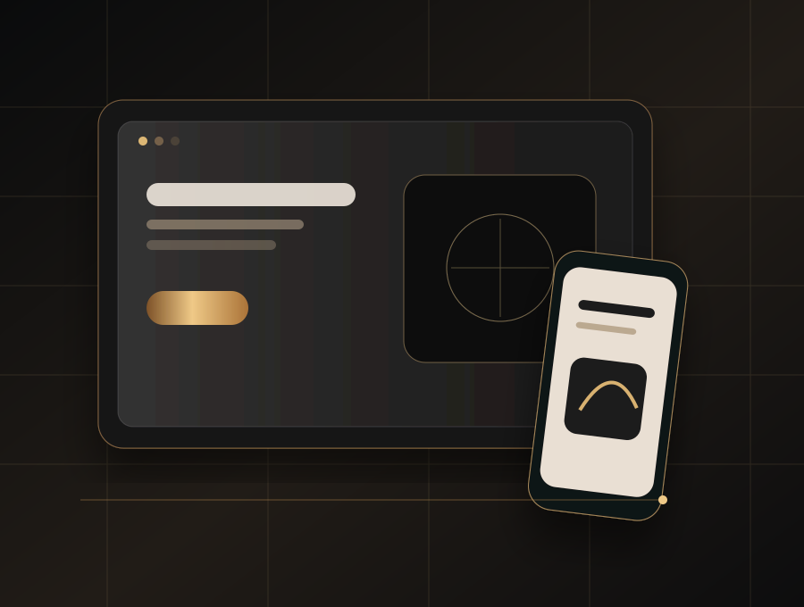
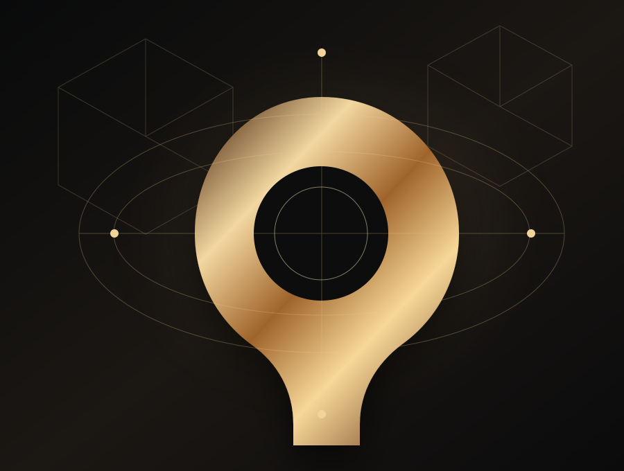

ROZNEX INDUSTRIAL3D + AI + OPERATIONS
ROZNEX / DIGITAL INTELLIGENCE STUDIO
DIGITAL EXPERIENCES WITH DEPTH, MOTION AND INTELLIGENCE.
Design, motion, code and intelligence — built as one experience.
ROZNEX creates interactive websites and digital products where visual craft and engineering move together.
Rozhan BehrouziROZHAN BEHROUZI · Founder / Technology Creator
AI
Agents for real workflows.
↗ WEBBrands, products, systems.
↗ 3DInteraction with a purpose.
↗ SEOArchitecture built to be found.
↗Scroll
01020304
One studio. Four disciplines. One connected digital system.
AI PRODUCTS✦WEB PRODUCTS✦3D WEB✦TECHNICAL SEO
SELECTED WORK
Work with a point of view.
Real projects where the idea had to survive real constraints.
CAPABILITIES
One studio. No disconnected handoffs.
Design, development, 3D, AI and SEO — connected from the start.

AIAI That Does Real Work
Intelligence embedded in real workflows — automation, analysis and decision support.
View service →
WEBWebsites With a Job to Do
Brand-led websites with intentional motion, responsive systems and clear conversion paths.
View service →
3D3D That Explains, Not Distracts
Purposeful 3D scenes that explain spaces, systems and products.
View service →Built to Be Found
Technical foundations, structured content and continuous analysis for durable visibility.
View service →PROCESS
Good work starts before the first pixel.
Strategy, design and engineering stay connected from the first question to launch.
Scope
Goals, audience, constraints and the real problem are defined before design begins.
Structure
The structure, visual language and interactions become one coherent experience.
Build
Fast, accessible implementation with careful motion, responsive behavior and technical SEO.
Measure
Launch is followed by measurement, refinement and a clear path for the next iteration.
ABOUT ROZHANFull profile ↗
Design and engineering, under one direction.
I'm Rozhan Behrouzi, founder of ROZNEX. I work across interface design, web engineering, AI systems and technical SEO, usually on projects where these pieces have to work together.
Architecture before decorationMotion earns its placeShip for real use
INSIGHTS
Notes from making things work.
What worked, what broke, and why the decisions changed.
AI / AGENTS
Where AI agents are actually useful.
Where agents create value, what not to automate first, and how to design permissions and ROI.
↗ WEB / STRATEGYWhat makes a corporate site credible.
Positioning, proof, mobile design, content structure and conversion — treated as one system.
↗ SEO / NEXT.JSThe Next.js SEO checks that matter.
Rendering, metadata, schema, Core Web Vitals, sitemaps and internal linking.
↗
START A CONVERSATION
Have something worth building?
Send the problem, what has to work, and the constraints. We’ll start there.
01Send the brief
02Scope review
03Private next step